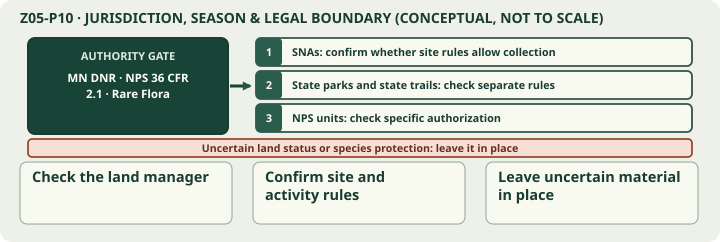

Z05-P10 · Wild foods and poisonous lookalikes · New manuscript
Foraging Law: State Parks, SNAs, National Parks and Rare Plants
Comply with strict federal and Minnesota statutory boundaries governing plant, berry, root, and mushroom gathering on public lands.
When it applies · All Minnesota public lands, preserves, and private parcels.
Equipment · Current MN DNR park/SNA rules, NPS 36 CFR 2.1, rare-species list.

Actions
- Obey zero-foraging bans inside Minnesota Scientific and Natural Areas (SNAs) and National Park units (36 CFR 2.1 unless explicitly designated otherwise in the park compendium).[B22, R08]
- Verify current Minnesota State Park statutes before touching any fruit or mushroom: State Parks strictly prohibit digging roots or damaging plants, and limited personal-use rules apply only where explicitly authorized.[B17, B23]
- Protect legally listed rare Minnesota plants (such as wild ginseng, prairie orchids, and state-listed species) unconditionally across all public and private lands without statutory permit.[B17]
Failure recognition · Digging wild leeks/ramps or ginseng in a State Park or picking berries inside an SNA violates state conservation statutes.[B17, B22, B23]
Verify · Land category, rare-plant status, current statute check date, and private-land permission are verified prior to any study.[B17, B22, B23]
Stop or change course · Stop gathering immediately whenever land boundaries are uncertain or SNA, NPS, or rare-species protections apply.[B17, B22]
Evidence and editorial notes
- B17 · Minnesota DNR · Minnesota Rare Species Guide and Native Plant Reference (Current web edition)
- Section: Protected rare plants and harvest conservation boundaries · Conditions: Minnesota endangered, threatened, and special-concern flora
Support: Rare native plants (e.g., wild ginseng, orchids, prairie perennials) carry strict legal protections against digging or harvest.
Limitations: Never dig unknown roots or bulbs on public land; verify legal collecting status before touching any specimen. · Conflicting evidence: None noted.
Editorial note: Prevents illegal digging of protected flora. · Specialist reviewer: State botanist and conservation officer
Primary source · checked 2026-11-25 - B22 · Minnesota DNR · Scientific and Natural Areas Program and Protected Habitats (Current web edition)
- Section: Scientific and Natural Areas zero-foraging prohibition · Conditions: Minnesota SNAs and strictly protected preserves
Support: Foraging, picking berries, cutting mushrooms, or digging roots is strictly prohibited inside Minnesota SNAs.
Limitations: Check land status before collecting even common fruits or mushrooms. · Conflicting evidence: None noted.
Editorial note: Public-land foraging compliance boundary. · Specialist reviewer: Minnesota DNR resource manager
Primary source · checked 2026-11-25 - B23 · Minnesota DNR · Minnesota State Park Rules and Resource Collecting Restrictions (Current web edition)
- Section: State park berry/mushroom rules vs root/plant bans · Conditions: Minnesota State Parks permitted vs prohibited gathering
Support: Minnesota State Parks prohibit digging roots or damaging plants; limited personal berry/mushroom rules apply only where explicitly permitted by current DNR statute.
Limitations: Always verify current park-specific rules before picking anything; never assume universal permission. · Conflicting evidence: None noted.
Editorial note: Accurate Minnesota State Park gathering rule. · Specialist reviewer: Minnesota DNR parks reviewer
Primary source · checked 2026-11-25 - R08 · National Park Service / eCFR · 36 CFR 2.1 Preservation of Natural, Cultural and Archeological Resources (Current CFR)
- Section: 36 CFR 2.1 natural resource collecting prohibitions · Conditions: National Parks, Monuments, and federal recreation areas
Support: Collecting rocks, minerals, fossils, wood, or natural specimens is prohibited on National Park System lands unless specifically authorized.
Limitations: Rules vary across USFS, BLM, state, tribal, county, and private lands; check the governing land manager before taking any sample. · Conflicting evidence: None noted.
Editorial note: Prevents unlawful federal resource extraction. · Specialist reviewer: Public-lands resource manager
Primary source · checked 2026-11-25
Source lineage · New manuscript (Z05 P19-C collection law) · Classification · New manuscript.